Katakana genellikle ülke, şehir isimlerinde veya Japonca diline dışarıdan eklenmiş daha doğrusu yabancı kelimeleri yazarken kullanılır.
Bu kelimelerden birine örnek vereyim hemen トルコ (TORUKO) yani Türkiye. Bir örnek daha ウイルス(UIRUSU) bu da virus demek.
Japonca konuşanları dinlerken bazı kelimeler tanıdık geliyor ise yüksek ihtimalle Katakana ile yazılıyordur. Katakana ile yazılanlar daha çok evrenselleşmiş kelimelerdir.
İlk karakterimize geçelim
ア
Bu karakter "a" şeklinde okunur.
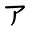
İkinci karakterimiz
イ
Bu karakter "i" şeklinde okunur.
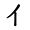
Üçüncü karakterimiz
ウ
Bu karakter "u" şeklinde okunur.
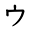
Dördüncü karakter
エ
Bu karakter "e" şeklinde okunur.
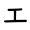
Beşinci karakter
オ
Bu karakter "o" şeklinde okunur.
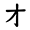
Altıncı karakter
カ
Bu karakter "ka" şeklinde okunur.
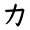
Yedinci karakter
キ
Bu karakter "ki" şeklinde okunur.
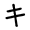
Sekizinci karakter
ク
Bu karakter "ku" şeklinde okunur.
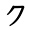
Dokuzuncu karakter
ケ
Bu karakter "ke" şeklinde okunur.
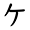
Onuncu karakter
コ
Bu karakter "ko" şeklinde okunur.
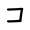
On birinci karakter
サ
Bu karakter "sa" şeklinde okunur.
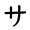
On ikinci karakter
シ
Bu karakter "şi" şeklinde okunur.
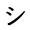
On üçüncü karakter
ス
Bu karakter "su" şeklinde okunur.
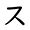
On dördüncü karakter
セ
Bu karakter "se" şeklinde okunur.
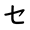
On beşinci karakter
ソ
Bu karakter "so" şeklinde okunur.
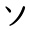
On altıncı karakter
タ
Bu karakter "ta" şeklinde okunur.
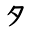
On yedinci karakter
チ
Bu karakter "chi" şeklinde okunur.
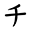
On sekizinci karakter
ツ
Bu karakter "tsu" şeklinde okunur.
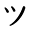
On dokuzuncu karakter
テ
Bu karakter "te" şeklinde okunur.
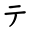
Yirminci karakter
ト
Bu karakter "to" şeklinde okunur.
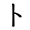
Yirminci birinci karakter
ナ
Bu karakter "na" şeklinde okunur.
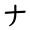
Yirminci ikinci karakter
ニ
Bu karakter "ni" şeklinde okunur.
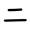
Yirminci üçüncü karakter
ヌ
Bu karakter "nu" şeklinde okunur.
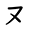
Yirminci dördüncü karakter
ネ
Bu karakter "ne" şeklinde okunur.
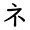
Yirminci beşinci karakter
ノ
Bu karakter "no" şeklinde okunur.
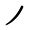
Yirminci altıncı karakter
ハ
Bu karakter "ha" şeklinde okunur.
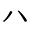
Yirminci yedinci karakter
ヒ
Bu karakter "hi" şeklinde okunur.
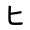
Yirminci sekizinci karakter
フ
Bu karakter "hu/fu" şeklinde okunur.
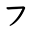
Yirminci dokuzuncu karakter
ヘ
Bu karakter "he" şeklinde okunur.
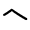
Otuzuncu karakter
ホ
Bu karakter "ho" şeklinde okunur.
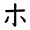
Otuz birinci karakter
マ
Bu karakter "ma" şeklinde okunur.
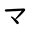
Otuz ikinci karakter
ミ
Bu karakter "mi" şeklinde okunur.
Otuz üçüncü karakter
ム
Bu karakter "mu" şeklinde okunur.
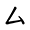
Otuz dördüncü karakter
メ
Bu karakter "me" şeklinde okunur.
Otuz beşinci karakter
モ
Bu karakter "mo" şeklinde okunur.
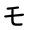
Otuz altıncı karakter
ヤ
Bu karakter "ya" şeklinde okunur.
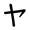
Otuz yedinci karakter
ユ
Bu karakter "yu" şeklinde okunur.
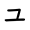
Otuz sekizinci karakter
ヨ
Bu karakter "yo" şeklinde okunur.
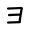
Otuz dokuzuncu karakter
ラ
Bu karakter "ra" şeklinde okunur.
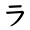
Kırkıncı karakter
リ
Bu karakter "ri" şeklinde okunur.
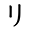
Kırk birinci karakter
ル
Bu karakter "ru" şeklinde okunur.
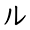
Kırk ikinci karakter
レ
Bu karakter "re" şeklinde okunur.
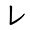
Kırk üçüncü karakter
ロ
Bu karakter "ro" şeklinde okunur.
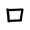
Kırk dördüncü karakter
ワ
Bu karakter "wa" şeklinde okunur.
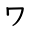
Kırkıncı beşinci karakter
ヲ
Bu karakter "wo" şeklinde okunur.
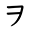
Kırk altıncı karakter
ン
Bu karakter "n" şeklinde okunur.
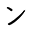